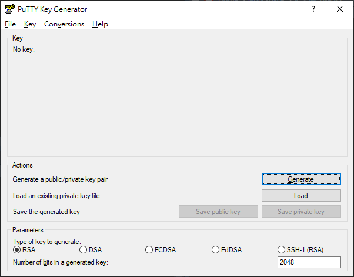

2.2 OpenSSH
前面第一章在安裝時，也有碰到 OpenSSH 伺服器設定的環節，不過那並不完整，是給已經擁有透過 ssh-keygen 產生的 ssh key pairs 的人看的。在這個小節會逐步解釋，從 OpenSSH client 安裝、產生 ssh key pairs 最後到連線。
2.2.1 適合各個系統的連線流程
要連接到虛擬機器的 OpenSSH 伺服器之前，你需要有一個可以讓你連接的 OpenSSH 客戶端。
2.2.1.1 MacOS 或 其他 Unix-like 系統
如果你是 Linux 或是 MacOS 系統，通常都有內建 OpenSSH 客戶端，可以直接跳至 以 OpenSSH Client 產生 key 的環節，Windows 與 Linux 使用 OpenSSH Utility 產生 ssh key pairs 的流程是一樣的。
2.2.1.2 Windows 系統
而 Windows 用戶不用擔心，Windows 用戶連線至 OpenSSH 伺服器的方法有很多種，就我已知的方法如下:
已經擁有 SSH key pairs 的前提下，可以使用 SSH 通訊協定連線的軟體，如:
PuTTY
Termius
Chrome 瀏覽器的任何一個 SSH 擴充套件
pros:
- 很快；安裝完就能設定 SSH 連線
cons:
- 經由第三方軟體連線，PuTTY 調整終端機主題很辛苦
直接在 Windows 10 內啟動 OpenSSH 用戶端，透過內建的 PowerShell SSH 連線至虛擬主機。
pros:- 跟第一個方法差不多快，也可以使用 Windows Terminal 客製化主題
cons:
- 你要額外學習 Windows 怎麼對檔案設定權限
在 Windows 10 內安裝 Windows 子系統 (Windows Subsystem for Linux; WSL)，然後直接在 Linux 環境透過 OpenSSH 連線至虛擬主機。
pros:- 可以學習到很多東西， Linux 可以用的在 Windows 的 WSL 內都可以使用，操作可以照搬到 WSL 上面。目前我是使用這個方式連線。
cons:
- 安裝過程所需的時間會根據每個人的經驗有所差異，需要從頭開始設定 Linux。
2.2.2 產生供 ssh 連線用的 key pairs
在 Windows 要產生 ssh key pairs 有兩種辦法，第一種是經由內建的 OpenSSH Client 產生，另一種是經由 PuTTY 所附的工具產生。
2.2.2.1 以 OpenSSH Client 產生 key
2.2.2.1.1 Step 1 — 安裝 OpenSSH Client (Linux 使用者可以跳過)
Windows 10 已經有內建在 Windows 的「應用程式與功能」內，預設是沒有安裝的。啟動流程如下:
點擊「開始」
打開「設定⚙」
選取「應用程式」 ➜ 「應用程式與功能」 ➜ 找到黑體字「程式與功能」，並點選下面的「選用功能」
在已安裝的篩選列上面篩選
ssh，如果沒有，請在頁面頂端點選「新增功能」，然後:- 找到「OpenSSH 用戶端」後，點選安裝
安裝完成後，你可以打開「命令提示字元」或是「PowerShell」輸入 ssh 來確認是否安裝完成。
PS C:\Users\qaz85> ssh
usage: ssh [-46AaCfGgKkMNnqsTtVvXxYy] [-B bind_interface]
[-b bind_address] [-c cipher_spec] [-D [bind_address:]port]
[-E log_file] [-e escape_char] [-F configfile] [-I pkcs11]
[-i identity_file] [-J [user@]host[:port]] [-L address]
[-l login_name] [-m mac_spec] [-O ctl_cmd] [-o option] [-p port]
[-Q query_option] [-R address] [-S ctl_path] [-W host:port]
[-w local_tun[:remote_tun]] destination [command]2.2.2.1.2 Step 2 — 產生 ssh key pairs
接著，可以使用 ssh-keygen 指令產生 key pairs，加密方式有 rsa、dsa、ed25519 與 ecdsa ，預設的加密方式是 rsa ，詳細指令用法可以透過 ssh-keygen --help 指令查詢，這裡我們用最簡單的 ssh-keygen 指令就行。
ssh-keygenWindows 的用戶預設會把 key pair 儲存在 C:\Users\<USERNAME>\.ssh\ 的位置，而 Linux 的用戶會儲存在 ~/.ssh/ 的位置。
Generating public/private rsa key pair.
Enter file in which to save the key (C:\Users\<USERNAME>/.ssh/id_rsa):這裡是詢問你要不要把產生的 ssh key 重新命名，一般不會動到它的名字，按 Enter↩︎，接續下一步。
Created directory 'C:\Users\<USERNAME>/.ssh'.
Enter passphrase (empty for no passphrase):
Enter same passphrase again:一旦你設定了 key pairs 的密碼，你每次連線時，都要再輸入一次密碼才能連線。如果不想那麼麻煩的話，可以按 Enter↩︎ 保持留空。
Your identification has been saved in C:\Users\<USERNAME>/.ssh/id_rsa.
Your public key has been saved in C:\Users\<USERNAME>/.ssh/id_rsa.pub.
The key fingerprint is:
SHA256:8NE76AD294Tjze76pEPtvZgqaqw9OuCF7T8HWPo6fUc qaz85@DESKTOP-OH6HA84
The key's randomart image is:
+---[RSA 3072]----+
| |
| . |
| o . . . |
| . + o + . |
| o + o S.+ |
|.. = . =.E.. |
|..o.o ..+.=. |
| ..+++.o.=.o. |
| o**++.=** .. |
+----[SHA256]-----+產生完畢，儲存在 C:\Users\<USERNAME>\.ssh\id_rsa 的檔案是 private key，而另一個 id_rsa.pub 的檔案是 public key。
2.2.2.2 以 PuTTY 產生 key
另一個方法不會需要你手動安裝 OpenSSH Client，不過、一樣地，要安裝PuTTY 程式。
2.2.2.2.1 Step 1 — 安裝 PuTTY
到開發者的網站，然後下載適合你 Windows 的版本 (副檔名為 *.msi 的安裝程式)
根據你的需求設定安裝程式

待安裝程式安裝完成

安裝完成後，點選「開始」，找到 PuTTYgen開啟，或是點選「開始」，鍵入 puttygen 後按 Enter↩︎
2.2.2.2.2 Step 2 — 經由 PuTTYgen 產生 ssh key pairs
跟 OpenSSH Client 一樣地，你可以在下方的 Types 選擇你偏好的加密方式。點選「Generate」開始產生 key，此時不要傻傻地在那邊等，要在程式進度條下方空白處隨意移動你的滑鼠鼠標。

完成後，可以在 Comment 的輸入框註解一下這個 key 是從哪裡來的，以後擁有多個 key pairs 時才不會搞混。當然你也可以用密碼保護這個 key pairs，如果有需要在 Key passphrase 與 Confirm passphrase 輸入一模一樣的密碼。

2.2.2.2.3 Step 3 — 妥善保存好產生的 Key
分別按下「Save public key」與「Save private key」找到適合的地方儲存它。
當你遺失了遠端主機的 key pairs，你再也不能透過遠端存取有使用過該 key pairs 的主機，只能透過直接接觸那台主機來更新的 key pairs。
2.2.3 將新增的 key pairs 上傳至目的地主機
當你擁有了 前一步產生的 key pairs，接下來要把 public key 上傳至虛擬機器。另外 public key 給別人看到是沒問題的，前面第一章的 OpenSSH設定 就已經有出現過我的 public key 了，public key 並不能用來產生 private key，它是用來認證這個 key 是否跟你所持有的 private key 相呼應。
2.2.3.1 上傳以 OpenSSH Client 產生的 ssh key pairs
如果你是的系統是 Linux 那指令會稍微短一些，上傳至遠端電腦的指令如下:
ssh-copy-id -i ~/.ssh/id_ed25519.pub -p 22 fintech@192.168.0.13-i: i flag 代表的是你要上傳的 public key 檔案路徑-p: p flag 則是目的地主機的 OpenSSH 伺服器的埠號id_ed25519.pub為我產生的其他的 key pair，如果你前面是照著我的步驟產生，這裡應該改為id_rsa.pub這裡的
fintech為第一章的使用者設定的預設使用者192.168.0.13為我虛擬主機的 ip 位址，查詢 ip 位址可以先手動登入虛擬主機後，用hostname -I或是ip addr show指令查詢
完成後會提示你已經可以使用 ssh 連線
/usr/bin/ssh-copy-id: INFO: Source of key(s) to be installed: "/home/kuaz/.ssh/id_ed25519.pub"
/usr/bin/ssh-copy-id: INFO: attempting to log in with the new key(s), to filter out any that are already installed
/usr/bin/ssh-copy-id: INFO: 1 key(s) remain to be installed -- if you are prompted now it is to install the new keys
Number of key(s) added: 1
Now try logging into the machine, with: "ssh -p '22' 'fintech@192.168.0.13'"
and check to make sure that only the key(s) you wanted were added.如果你是 Windows 的使用者也不用擔心多複雜，一樣一行指令就能搞定，這裡我是參考(Christopher 2020)的教學，指令如下:
cat $env:USERPROFILE\.ssh\id_rsa.pub | ssh fintech@192.168.0.13 "cat >> ~/.ssh/authorized_keys"這裡的
$env:USERPROFILE為 Windows 內建環境變數，會根據現在的使用者變更，如果我的使用者名稱為qaz855175b那$env:USERPROFILE對應的路徑就為C:\Users\qaz855175b\，當然你可以直接把指令的 public key 路徑替換為C:\Users\qaz855175b\.ssh\id_rsa.pubid_rsa.pub為產生的 public key 預設名稱這裡的
fintech為第一章的使用者設定的預設使用者192.168.0.13為我虛擬主機的 ip 位址，查詢 ip 位址可以先手動登入虛擬主機後，用hostname -I或是ip addr show指令查詢
其實 Linux 的 ssh-copy-id、和第一章的從 Github 匯入 public key ssh-import-id-gh 與這裡的 cat file >> ~/.ssh/authorized_keys 都是在做同一件事情，把 public key 貼到遠端伺服器的使用者的 authorized_keys 檔案裡面。
接著按 Enter↩︎，跳出輸入密碼提示，這裡輸入預設的使用者密碼 fintech
fintech@192.168.0.13's password:輸入完後雖然沒有任何提示訊息，但其實已經可以使用 ssh 連線至遠端主機啦~
2.2.3.2 上傳以 PuTTY 產生的 ssh key pairs
PuTTY 產生的 public key 與 private key 格式比較特別，並不能直接把 public key 裡面的文字直接貼到遠端電腦的 ~/.ssh/authorized_keys 檔案裡面，需要經由 PuTTYgen.exe 讀取 *.ppk 才能得到正確格式的 public key。首先把 PuTTYgen 程式打開。

接著按「Load」把剛剛產生的 *.ppk 檔案讀取進來。會看到一行字「Public key for pasting into OpenSSH authorized_keys file」下面的可複製區域就是 public key，把它整段複製起來。

接著打開「PowerShell」或是「命令提示字元」，輸入:
echo "<YOUR_PUBLIC_KEY>" | ssh fintech@192.168.0.13 "cat >> ~/.ssh/authorized_keys"將
<YOUR_PUBLIC_KEY>替換成自己的 public key這裡的
fintech為第一章的使用者設定的預設使用者192.168.0.13為我虛擬主機的 ip 位址，查詢 ip 位址可以先手動登入虛擬主機後，用hostname -I或是ip addr show指令查詢
接著按 Enter↩︎，跳出輸入密碼提示，這裡輸入預設的使用者密碼 fintech
fintech@192.168.0.13's password:輸入完成不會出現任何訊息是正常的，代表操作沒有問題且已經可以使用 PuTTY 連線了。
2.2.4 使用 SSH 連線至遠端主機
最後，使用 ssh 指令連接至遠端主機。
2.2.4.1 OpenSSH Client 產生的 key pairs 的連線方式:
使用 OpenSSH Client 產生的 pair keys 可以直接使用這個方法連線。這裡介紹幾個常常與 ssh 一起出現的 flag :
-v: verbose; 顯示連接時更詳細的訊息，debug時常用-p: port; 遠端伺服器的埠號-i: 手動指定 private key 位址
flag 通常會在指令後面隨後出現，flag前面會插入 -，而 flag 後面有時會需要加入詳細的設定，有時不用。flag 與 flag 之間用空格隔開，詳細指令的使用方法可以在 Linux 系統用 man <指令名稱> 查詢
假如我們要看連線的詳細訊息，且指定伺服器 port 為 60000與指定 private key 檔案位址等等，組合起來就是:
ssh -v -p 60000 -i ~/.ssh/id_rsa fintech@192.168.0.13目前不需要加上任何 flag，連線指令為:
ssh fintech@192.168.0.13一樣地，fintech 是使用者名稱，而192.168.0.13 是 OpenSSH 伺服器的 ip 位置，輸入完後按 Enter↩︎
這邊打 yes 即可，確認連接目的地沒有錯之後，會把 fingerprint 寫入 ~/.ssh/known_hosts 中，以後不再詢問。
The authenticity of host '192.168.0.13 (192.168.0.13)' can't be established.
ECDSA key fingerprint is SHA256:/HoocrLXe63zycdlmkh/+U3RuUfkawNq/xA0gTJmqmM.
Are you sure you want to continue connecting (yes/no/[fingerprint])?這裡不用指定 private key 的原因是因為，當你用 ssh 連線至目的地伺服器且你沒有指定 Identity File (private key) 時，ssh 會一個 key 一個 key 拿去問伺服器這個 key 可不可以使用。
連接成功~

2.2.4.2 PuTTYgen 產生的 key pairs 的連線方式:
SSH 連線方式大同小異:
首先點選「開始」，鍵入
PuTTY打開客戶端在左邊的 「Category:」 下，選取 「Session」
於 Host Name 輸入「使用者@目的地 IP」，像是「
fintech@192.168.0.13」你可以點選下面的「Default Settings」後，接著按「Save」會把剛剛輸入的 IP 與 Port 儲存至「Default Settings」內，當然你也可以自己取一個新的名字。
接著展開左邊 「Category:」 下的「Connection」 ➜ 點選「SSH」 ➜ 再點選「Auth」，於最下面的「Private key file for authentication:」點選「Browse…」選取
*.ppk檔案位置完成後點選「Open」連線
與使用 ssh 指令連線相同，都會先提醒你目的地是否正確。確認無誤按下「Accept」

連接成功!